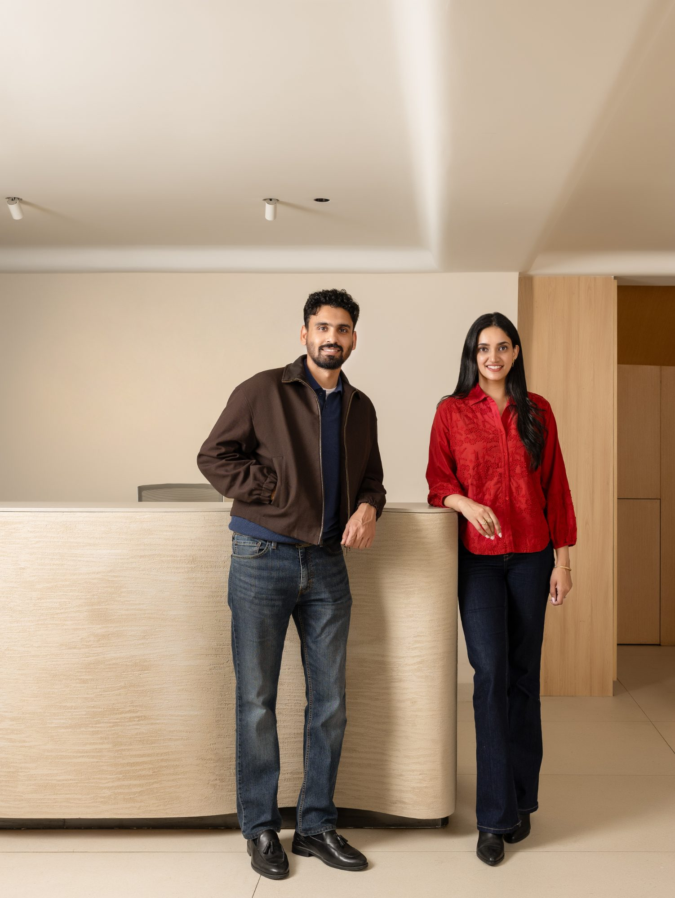

The Studio
Preamble Design is a luxury architecture and interior design studio founded by Rubleen Batth, with Arsh Batth as Technical Director. Based in DLF Phase II, Gurugram, we create high-end residential and commercial spaces across India.
We design spaces where architecture leads and interiors follow with purpose — guided by proportion, material depth and quiet precision. From architectural planning to bespoke interior execution, every project is defined by presence, balance and enduring refinement.
What we believe
Trends are a way to look current for eighteen months and tired forever after. We design for the version of your home that still feels right in fifteen years — quiet, material, unmistakably yours.
Most studios pick furniture from a catalogue. We draw and build ours in-studio, so the joinery and the architecture speak the same language. Bespoke isn't a line item here — it's how we work.

What we do
Ground-up homes, additions and renovations. We resolve planning, form and structure with technical precision — always in service of how light moves and how a family actually lives.
From material selection to spatial detail, we shape interiors that feel refined, functional and personal. Every surface, joint and fitting is chosen to age gracefully and belong to its place.
Bespoke millwork and furniture, designed for the room it belongs to and built to last. Drawing and making in-studio lets architecture and furniture speak the same language.
How we work
We begin with how you live — your rituals, your collection, your light. Site, orientation and brief are studied together before a single line is drawn.
Plans, massing and spatial sequence are explored as architecture and interior together — establishing proportion, flow and a clear material direction.
The design is tested in drawings, models and full material boards. Stone, joinery and finishes are selected and sampled against the light of the room.
Every junction is resolved — mouldings, edge profiles, joinery sections and bespoke furniture drawn to millimetre. This is where the work earns its calm.
We stay on site through delivery, coordinating trades and craftspeople so the built result holds true to the intent of every drawing.
Furniture, lighting and the final layer of objects are placed by hand — the moment a structured space becomes a considered, lived-in home.